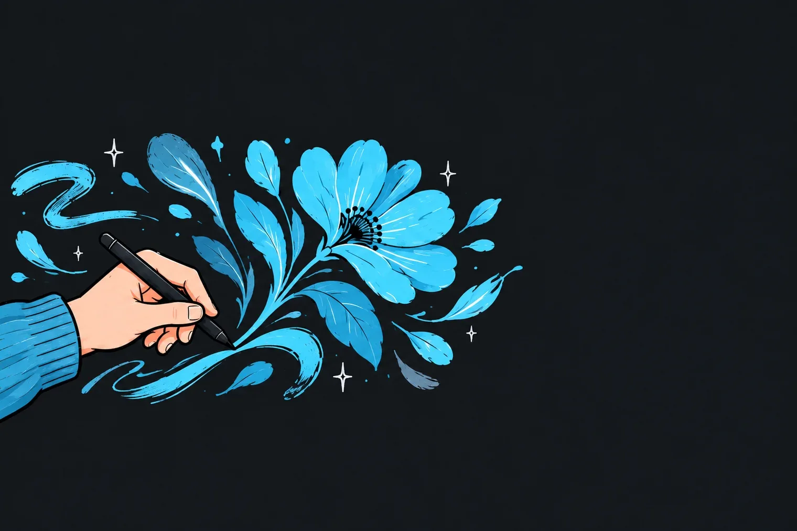
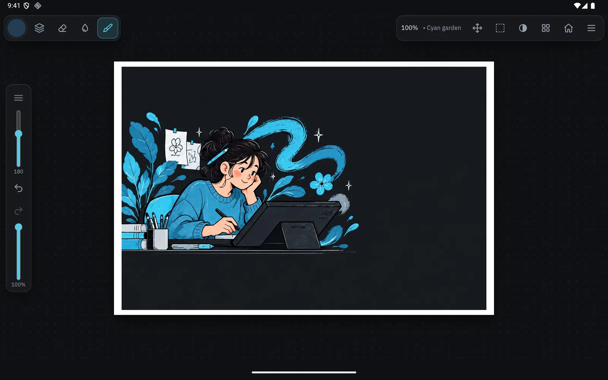
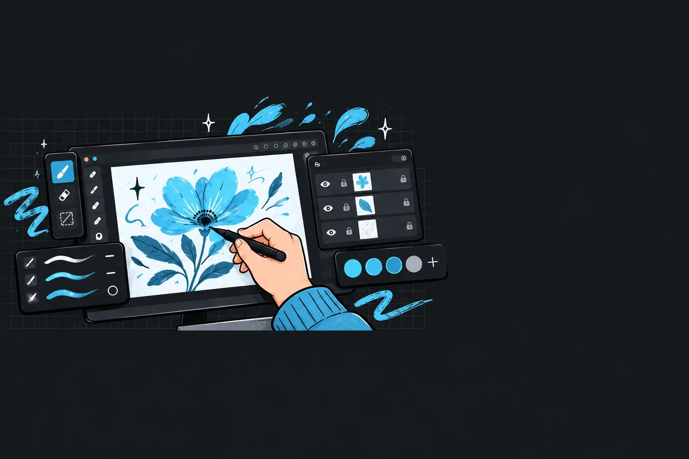
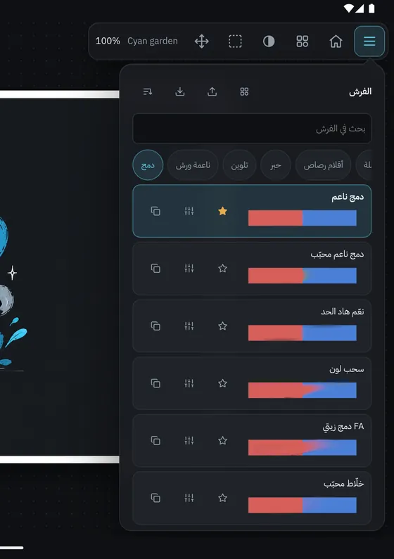
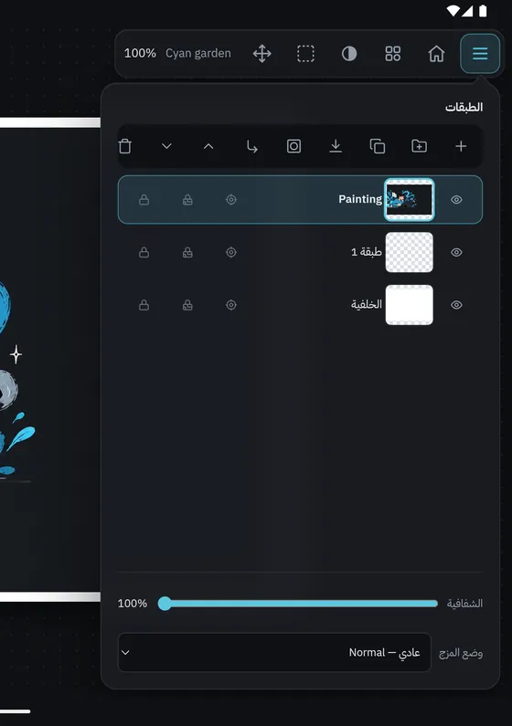
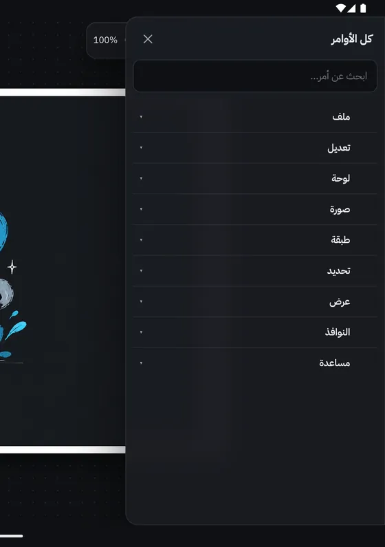

إيماءات
إصبعين = تراجع، تلاتة = إعادة، أربعة = إخفاء الأزرار.

للتابلت والقلم، وللكمبيوتر
FA استوديو رسم وتلوين بواجهة عربية من اليمين لليسار. فرش بتحسّها، طبقات، ودمج زي الألوان الحقيقية.
ما في تسجيل ولا حساب. بتفتح الرابط وبترسم.
ارسم. ادمج. شارك.
لقطة حقيقية من FA على تابلت أندرويد: اللوحة بالنص، والأدوات على الأطراف.

دمج زي الحقيقي
فرشة «دمج ناعم محبّب» بتخلط الألوان زي الطلاء الحقيقي، مش زي الشاشة. وبتخلّي ملمس الورق.

فرش وطبقات
افتح فرشك من Procreate وPhotoshop وClip Studio وارسم فيها. ومع ضغط القلم وميله.

لوحة الفرش

لوحة الطبقات

كل الأوامر بمكان واحد
إصبعين = تراجع، تلاتة = إعادة، أربعة = إخفاء الأزرار.
كف إيدك ما بيرسم وانت شغّال بالقلم، وزر S Pen الجانبي بيبدّل بين الفرشاة والممحاة.
حفظ تلقائي بمجلد Documents/FA. بتفتح .psd وبتصدّر PNG وJPG وPSD.
ما في حسابات ولا إعلانات ولا تتبّع. رسوماتك ما بتطلع من جهازك.
المتصفح شغّال من اليوم، وويندوز تجريبي. نسخ المتجر جاية.
بدون تنزيل. افتحه على التابلت أو الكمبيوتر.
جرّب FA هلّأنسخة تجريبية للكمبيوتر.
نزّل لويندوزأندرويد وتابلتات أندرويد.
قريباًآيباد مع القلم.
قريباً